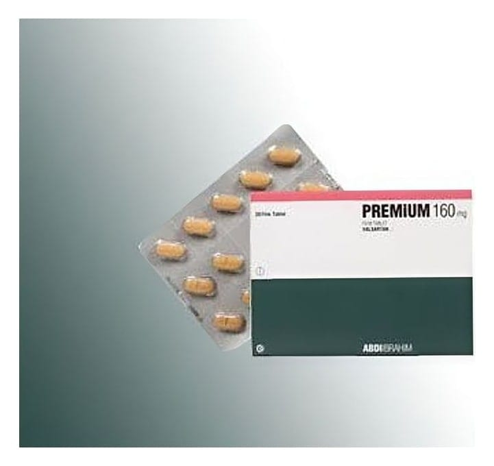

Premium 160 mg Film Tablet, 28 Adet

Ne için kullanılır
KT · Bölüm 1PREMİUM, 28 ve 84 adet film kaplı tablet içeren blister ambalajda takdim edilmektedir.
PREMİUM, koyu sarı, oblong, bikonveks, bir tarafı çentikli ve 16 baskılı, diğer tarafı VLS baskılı film kaplı tabletler
Her bir film tablet, 160 mg valsartan içerir.
PREMİUM, yüksek kan basıncının kontrol edilmesine yardımcı olan anjiyotensin II antagonistleri olarak bilinen ilaç sınıfına aittir.
PREMİUM 6 - 18 yaş arasındaki çocuklar ve ergenlerin yüksek kan basıncı ile yetişkinlerde yüksek kan basıncının düşürülmesinde kullanılır. Tek başına veya yüksek tansiyon tedavisinde kullanılan diğer ilaçlarla birlikte kullanılabilir.
PREMİUM, kalp yetmezliği tedavisinde de ADE inhibitörleri adı verilen ilaçlar iyi tolere edilemediğinde veya beta-blokörlere toleranssız hastalarda mineralokortikoid reseptör antagonistleri adı verilen ilaçlar kullanılamadığında ADE inhibitörlerine ilave tedavi olarak kullanılmaktadır. PREMİUM ayrıca, sağ kalımı iyileştirmek ve ilave kalp sorunlarını azaltmak üzere kalp krizi (miyokard infarktüsü) geçirmiş hastaların tedavisinde de kullanılabilir. PREMİUM’un ne şekilde etki ettiğine veya bu ilacın size neden reçete edildiğine ilişkin sorularınız varsa, doktorunuza danışın.